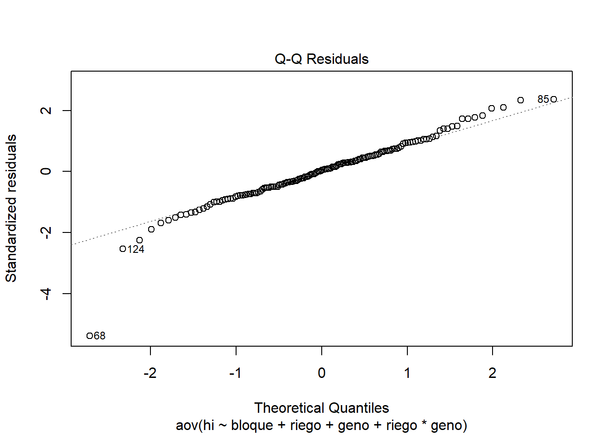
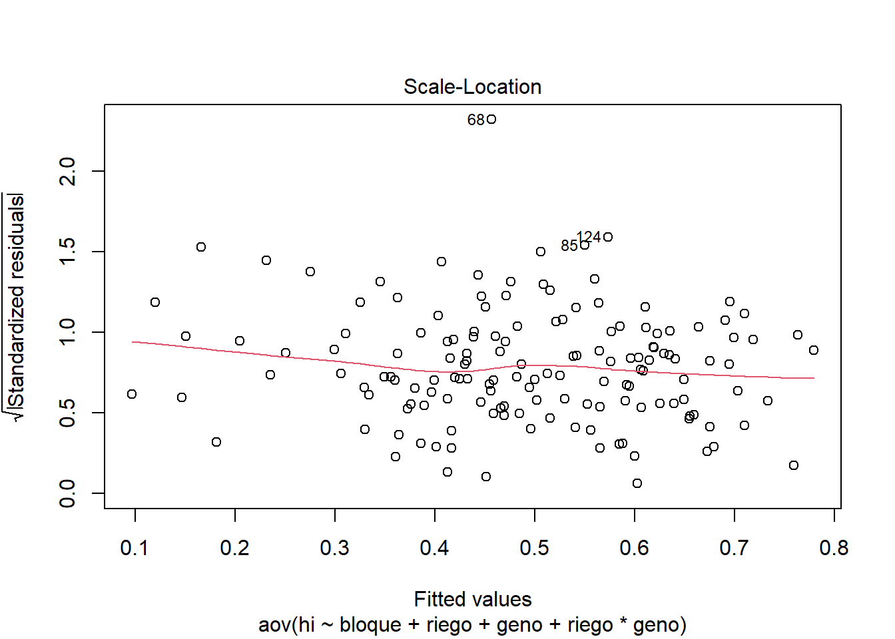
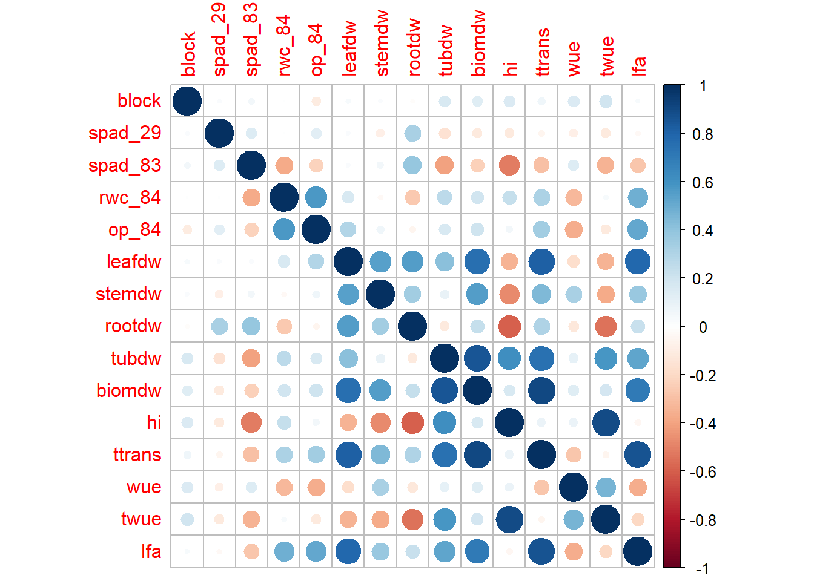

1 + 1[1] 2Quarto enables you to weave together content and executable code into a finished document. To learn more about Quarto see https://quarto.org.
When you click the Render button a document will be generated that includes both content and the output of embedded code. You can embed code like this:
1 + 1[1] 2You can add options to executable code like this
[1] 4The echo: false option disables the printing of code (only output is displayed).
Area de una circunferencia \(Area_{circunferencia}=pi.r^2\)
esta es una formula cualquiera \[k=\frac{\left(2x-1\right)^2-1}{4}"\]
#importar archivo
source('https://inkaverse.com/setup.r')ℹ The googlesheets4 package is using a cached token for
'evilchezbustamante@gmail.com'.ℹ The googledrive package is using a cached token for
'7370404121@untrm.edu.pe'.url <- "https://docs.google.com/spreadsheets/d/15r7ZwcZZHbEgltlF6gSFvCTFA-CFzVBWwg3mFlRyKPs/edit?gid=172957346#gid=172957346"
gs <- url %>%
as_sheets_id()
fb <- gs %>%
range_read("fb")✔ Reading from "LA MOLINA 2014 POTATO WUE (FB)".✔ Range ''fb''.str(fb)tibble [150 × 18] (S3: tbl_df/tbl/data.frame)
$ riego : chr [1:150] "sequia" "sequia" "irrigado" "sequia" ...
$ geno : chr [1:150] "G01" "G02" "G01" "G02" ...
$ block : num [1:150] 2 4 3 1 2 5 1 4 2 1 ...
$ bloque : chr [1:150] "II" "IV" "III" "I" ...
$ spad_29: num [1:150] 56.3 52.7 49.2 55.5 58.2 43.5 57.4 56.1 61 60.3 ...
$ spad_83: num [1:150] 41.1 47.9 41.6 44.2 32.6 37.8 42.5 35.9 57.5 41.8 ...
$ rwc_84 : num [1:150] 61.5 63.2 67.7 64.9 74.5 ...
$ op_84 : num [1:150] -2.43 -3.03 -2.5 -2.4 -2.27 ...
$ leafdw : num [1:150] 13.28 9.42 18.22 8.84 14.55 ...
$ stemdw : num [1:150] 14.87 8.63 24.19 6.58 12.63 ...
$ rootdw : num [1:150] 3.83 2.1 3.16 2 1.83 2.83 2.28 3.65 4.04 4.17 ...
$ tubdw : num [1:150] 19.8 17.7 38 13.5 51.1 ...
$ biomdw : num [1:150] 51.8 37.8 83.6 30.9 80.2 ...
$ hi : num [1:150] 0.45 0.43 0.455 0.437 0.638 ...
$ ttrans : num [1:150] 4.5 3.54 8.39 2.9 7.37 ...
$ wue : num [1:150] 11.51 10.69 9.97 10.65 10.88 ...
$ twue : num [1:150] 4.4 4.99 4.53 4.65 6.94 ...
$ lfa : num [1:150] 2900 2619 7579 2450 5413 ...modelo <- aov(formula = lfa ~ bloque + riego + geno + riego*geno
,data = fb)
anova(modelo)
## Analysis of Variance Table
##
## Response: lfa
## Df Sum Sq Mean Sq F value Pr(>F)
## bloque 4 3435339 858835 1.5616 0.1892
## riego 1 788556926 788556926 1433.7957 <0.0000000000000002 ***
## geno 14 261729564 18694969 33.9922 <0.0000000000000002 ***
## riego:geno 14 108147972 7724855 14.0457 <0.0000000000000002 ***
## Residuals 116 63797516 549979
## ---
## Signif. codes: 0 '***' 0.001 '**' 0.01 '*' 0.05 '.' 0.1 ' ' 1
plot(modelo)


ggplot(fb, aes(x = geno, y = lfa, colour = riego)) +
geom_boxplot(outlier.colour = "red" , outlier.shape = 16, outlier.size = 2) +
labs(title = "boxplot con interacción de niveles de riego y genotipo" ,
x = "Interacción Riego y Genotipo",
y = "Valor de la variable respuesta") +
theme_minimal() +
theme(axis.text.x = element_text(angle = 45, hjust = 1)) #Inclinar etiquetas del eje x
modelo <- aov(formula = hi ~ bloque + riego + geno + riego*geno
,data = fb)
anova(modelo)
## Analysis of Variance Table
##
## Response: hi
## Df Sum Sq Mean Sq F value Pr(>F)
## bloque 4 0.09111 0.022778 7.0747 0.00003925028 ***
## riego 1 0.12176 0.121758 37.8165 0.00000001135 ***
## geno 14 2.70077 0.192912 59.9161 < 0.00000000000000022 ***
## riego:geno 14 0.07762 0.005544 1.7219 0.06019 .
## Residuals 116 0.37349 0.003220
## ---
## Signif. codes: 0 '***' 0.001 '**' 0.01 '*' 0.05 '.' 0.1 ' ' 1
plot(modelo)



ggplot(fb, aes(x = geno, y = hi, colour = riego)) +
geom_boxplot(outlier.colour = "red" , outlier.shape = 16, outlier.size = 2) +
labs(title = "boxplot con interacción de niveles de riego y genotipo" ,
x = "Interacción Riego y Genotipo",
y = "Valor de la variable respuesta") +
theme_minimal() +
theme(axis.text.x = element_text(angle = 45, hjust = 1)) #Inclinar etiquetas del eje xlibrary(lme4)
modelo <- lme4::lmer(formula = lfa ~ riego + geno + riego*geno + (1|bloque)
,data = fb)
anova(modelo)
## Analysis of Variance Table
## npar Sum Sq Mean Sq F value
## riego 1 788556926 788556926 1433.796
## geno 14 261729564 18694969 33.992
## riego:geno 14 108147972 7724855 14.046
plot(modelo)
ol <- boxplot(lfa~riego*geno, fb)
ol
## $stats
## [,1] [,2] [,3] [,4] [,5] [,6] [,7] [,8] [,9]
## [1,] 6539.86 2900.00 4631.00 2449.59 5305.77 1811.97 8569.08 2511.13 7205.94
## [2,] 7038.08 2994.58 5162.74 2487.28 5369.88 1953.50 8867.03 2889.83 8189.67
## [3,] 7578.79 2999.66 5233.55 2618.85 5412.51 2107.76 9791.10 3010.27 8913.12
## [4,] 7750.00 3100.00 6478.14 2966.18 5450.00 2147.55 10305.61 3218.63 9793.99
## [5,] 7982.73 3203.70 7392.38 3063.35 5545.69 2274.48 10811.84 3263.70 10291.06
## [,10] [,11] [,12] [,13] [,14] [,15] [,16] [,17] [,18]
## [1,] 1657.64 6576.65 3159.54 1065.26 216.31 6998.00 2021.37 8533.54 2781.32
## [2,] 1700.00 6857.13 3198.96 1068.97 495.83 7012.74 2278.60 8924.78 2961.78
## [3,] 1771.80 6938.90 3381.68 1140.05 782.10 7310.01 2319.71 10764.71 3150.00
## [4,] 1821.46 7864.08 3450.00 1607.25 811.45 7469.58 2550.51 10919.31 3235.10
## [5,] 1967.49 9040.06 3550.19 1989.25 1097.98 7643.80 2697.93 12296.22 3238.41
## [,19] [,20] [,21] [,22] [,23] [,24] [,25] [,26] [,27]
## [1,] 4249.18 2909.10 3966.33 1556.38 6111.43 2400.00 7180.79 3062.34 6049.52
## [2,] 4743.16 2909.10 6210.41 1942.23 7164.03 2425.26 8256.98 3110.00 7895.00
## [3,] 5171.21 2940.95 7225.02 2237.88 7194.26 2438.98 8750.00 3120.00 8978.89
## [4,] 6028.93 3096.00 8005.55 2274.26 8012.79 2480.00 9430.43 3146.19 9221.24
## [5,] 6164.24 3136.07 8867.09 2301.31 8603.78 2487.78 9743.70 3191.97 9776.01
## [,28] [,29] [,30]
## [1,] 3318.36 6270.00 1560.00
## [2,] 3326.93 6302.79 1560.00
## [3,] 3449.76 6304.88 1601.06
## [4,] 3664.65 6435.00 1750.00
## [5,] 3811.99 6522.46 1814.84
##
## $n
## [1] 5 5 5 5 5 5 5 5 5 5 5 5 5 5 5 5 5 5 5 5 5 5 5 5 5 5 5 5 5 5
##
## $conf
## [,1] [,2] [,3] [,4] [,5] [,6] [,7] [,8]
## [1,] 7075.749 2925.17 4304.092 2280.46 5355.897 1970.645 8774.603 2777.941
## [2,] 8081.831 3074.15 6163.008 2957.24 5469.123 2244.875 10807.597 3242.599
## [,9] [,10] [,11] [,12] [,13] [,14] [,15] [,16]
## [1,] 7779.512 1685.977 6227.392 3204.296 759.7027 559.0837 6987.208 2127.579
## [2,] 10046.728 1857.623 7650.408 3559.064 1520.3973 1005.1163 7632.812 2511.841
## [,17] [,18] [,19] [,20] [,21] [,22] [,23] [,24]
## [1,] 9355.38 2956.873 4262.688 2808.887 5956.579 2003.268 6594.528 2400.301
## [2,] 12174.04 3343.127 6079.732 3073.013 8493.461 2472.492 7793.992 2477.659
## [,25] [,26] [,27] [,28] [,29] [,30]
## [1,] 7920.843 3094.428 8041.772 3211.128 6211.461 1466.806
## [2,] 9579.157 3145.572 9916.008 3688.392 6398.299 1735.314
##
## $out
## [1] 2541.12 1176.63
##
## $group
## [1] 20 30
##
## $names
## [1] "irrigado.G01" "sequia.G01" "irrigado.G02" "sequia.G02" "irrigado.G03"
## [6] "sequia.G03" "irrigado.G04" "sequia.G04" "irrigado.G05" "sequia.G05"
## [11] "irrigado.G06" "sequia.G06" "irrigado.G07" "sequia.G07" "irrigado.G08"
## [16] "sequia.G08" "irrigado.G09" "sequia.G09" "irrigado.G10" "sequia.G10"
## [21] "irrigado.G11" "sequia.G11" "irrigado.G12" "sequia.G12" "irrigado.G13"
## [26] "sequia.G13" "irrigado.G14" "sequia.G14" "irrigado.G15" "sequia.G15"
library(inti)
model <- remove_outliers(data = fb
,formula = lfa ~ riego + geno + riego*geno + (1|bloque)
,plot_diag = T
)
model
## $data
## $data$raw
## # A tibble: 150 × 5
## index riego geno bloque lfa
## <chr> <chr> <chr> <chr> <dbl>
## 1 1 sequia G01 II 2900
## 2 2 sequia G02 IV 2619.
## 3 3 irrigado G01 III 7579.
## 4 4 sequia G02 I 2450.
## 5 5 irrigado G03 II 5413.
## 6 6 irrigado G04 V 9791.
## 7 7 irrigado G01 I 7038.
## 8 8 irrigado G05 IV 9794.
## 9 9 sequia G06 II 3199.
## 10 10 sequia G05 I 1658.
## # ℹ 140 more rows
##
## $data$clean
## index riego geno bloque lfa
## 1 1 sequia G01 II 2900.00
## 2 2 sequia G02 IV 2618.85
## 3 3 irrigado G01 III 7578.79
## 4 4 sequia G02 I 2449.59
## 5 5 irrigado G03 II 5412.51
## 6 6 irrigado G04 V 9791.10
## 7 7 irrigado G01 I 7038.08
## 8 8 irrigado G05 IV 9793.99
## 9 9 sequia G06 II 3198.96
## 10 10 sequia G05 I 1657.64
## 11 11 irrigado G01 II 7982.73
## 12 12 sequia G07 II 1097.98
## 13 13 irrigado G08 II 7310.01
## 14 14 irrigado G06 III 6576.65
## 15 15 irrigado G09 III 10764.71
## 16 16 irrigado G10 II 5171.21
## 17 17 sequia G11 I 1556.38
## 18 18 sequia G12 III 2425.26
## 19 19 irrigado G07 I 1065.26
## 20 20 irrigado G04 II 10811.84
## 21 21 irrigado G13 II 9743.70
## 22 22 irrigado G14 III 7895.00
## 23 23 irrigado G04 IV 10305.61
## 24 24 sequia G04 V 3218.63
## 25 25 sequia G08 V 2697.93
## 26 26 sequia G04 III 3263.70
## 27 27 sequia G01 IV 2994.58
## 28 28 irrigado G10 I 6164.24
## 29 29 irrigado G08 V 7469.58
## 30 30 irrigado G02 V 5233.55
## 31 31 irrigado G07 III 1607.25
## 32 32 irrigado G08 I 6998.00
## 33 33 irrigado G14 V 8978.89
## 34 34 irrigado G03 I 5545.69
## 35 35 sequia G13 III 3120.00
## 36 36 sequia G01 V 2999.66
## 37 37 sequia G03 I 2274.48
## 38 38 irrigado G15 III 6302.79
## 39 39 irrigado G03 IV 5305.77
## 40 40 irrigado G09 IV NA
## 41 41 irrigado G11 II NA
## 42 42 sequia G03 V 2147.55
## 43 43 sequia G11 III 2301.31
## 44 44 irrigado G06 V NA
## 45 45 sequia G05 V 1771.80
## 46 46 sequia G08 IV 2021.37
## 47 47 irrigado G11 IV 8005.55
## 48 48 sequia G11 II 1942.23
## 49 49 irrigado G10 III 6028.93
## 50 50 sequia G06 IV 3550.19
## 51 51 sequia G09 I 3238.41
## 52 52 irrigado G11 I 6210.41
## 53 53 sequia G11 IV 2237.88
## 54 54 irrigado G15 IV 6270.00
## 55 55 irrigado G13 IV 9430.43
## 56 56 sequia G14 V 3664.65
## 57 57 irrigado G02 IV NA
## 58 58 irrigado G09 II NA
## 59 59 irrigado G02 III 5162.74
## 60 60 sequia G08 III 2550.51
## 61 61 irrigado G06 II 6938.90
## 62 62 sequia G13 IV 3062.34
## 63 63 sequia G14 III 3449.76
## 64 64 sequia G04 II 2511.13
## 65 65 irrigado G11 III NA
## 66 66 irrigado G07 II 1068.97
## 67 67 irrigado G08 IV 7643.80
## 68 68 sequia G05 IV 1821.46
## 69 69 irrigado G04 I 8569.08
## 70 70 irrigado G11 V 7225.02
## 71 71 irrigado G12 I 7194.26
## 72 72 sequia G14 IV 3318.36
## 73 73 sequia G07 III 811.45
## 74 74 irrigado G03 III 5450.00
## 75 75 sequia G01 I 3100.00
## 76 76 sequia G04 I 3010.27
## 77 77 sequia G03 II 2107.76
## 78 78 irrigado G15 II 6304.88
## 79 79 sequia G12 IV 2480.00
## 80 80 sequia G12 I 2400.00
## 81 81 sequia G08 I 2319.71
## 82 82 sequia G05 II 1700.00
## 83 83 sequia G02 II 2966.18
## 84 84 sequia G10 I 3136.07
## 85 85 sequia G15 I 1814.84
## 86 86 irrigado G07 V 1140.05
## 87 87 sequia G10 V 2909.10
## 88 88 sequia G13 II 3110.00
## 89 89 sequia G07 V 495.83
## 90 90 sequia G03 III 1953.50
## 91 91 sequia G15 IV 1750.00
## 92 92 sequia G13 I 3191.97
## 93 93 sequia G03 IV 1811.97
## 94 94 irrigado G10 V 4249.18
## 95 95 sequia G13 V 3146.19
## 96 96 sequia G09 II 3235.10
## 97 97 irrigado G14 IV NA
## 98 98 irrigado G01 V 6539.86
## 99 99 sequia G01 III 3203.70
## 100 100 irrigado G06 IV 7864.08
## 101 101 sequia G04 IV 2889.83
## 102 102 irrigado G15 V 6522.46
## 103 103 irrigado G13 III NA
## 104 104 irrigado G02 II 6478.14
## 105 105 sequia G08 II 2278.60
## 106 106 irrigado G04 III 8867.03
## 107 107 sequia G02 V 3063.35
## 108 108 sequia G06 V 3159.54
## 109 109 irrigado G15 I 6435.00
## 110 110 irrigado G13 V 8750.00
## 111 111 irrigado G05 V 8189.67
## 112 112 sequia G09 III 2961.78
## 113 113 sequia G09 V 2781.32
## 114 114 sequia G10 II 2940.95
## 115 115 irrigado G07 IV 1989.25
## 116 116 irrigado G05 I NA
## 117 117 irrigado G02 I 4631.00
## 118 118 sequia G05 III 1967.49
## 119 119 irrigado G12 II NA
## 120 120 sequia G15 III 1601.06
## 121 121 irrigado G13 I 8256.98
## 122 122 sequia G14 II 3811.99
## 123 123 sequia G12 II 2438.98
## 124 124 sequia G15 II 1560.00
## 125 125 irrigado G09 V NA
## 126 126 sequia G06 I 3381.68
## 127 127 sequia G09 IV 3150.00
## 128 128 sequia G15 V 1176.63
## 129 129 irrigado G14 I NA
## 130 130 sequia G06 III 3450.00
## 131 131 irrigado G01 IV 7750.00
## 132 132 irrigado G12 III 7164.03
## 133 133 sequia G12 V 2487.78
## 134 134 irrigado G12 V 8603.78
## 135 135 sequia G11 V 2274.26
## 136 136 irrigado G12 IV 8012.79
## 137 137 irrigado G09 I 10919.31
## 138 138 sequia G02 III 2487.28
## 139 139 sequia G07 I 216.31
## 140 140 irrigado G08 III 7012.74
## 141 141 irrigado G06 I 6857.13
## 142 142 irrigado G10 IV 4743.16
## 143 143 irrigado G03 V 5369.88
## 144 144 sequia G07 IV 782.10
## 145 145 irrigado G05 III 8913.12
## 146 146 sequia G14 I 3326.93
## 147 147 sequia G10 III 3096.00
## 148 148 irrigado G14 II 9221.24
## 149 149 irrigado G05 II NA
## 150 150 sequia G10 IV 2541.12
##
##
## $outliers
## index riego geno bloque lfa resi res_MAD rawp.BHStud
## 40 40 irrigado G09 IV 8533.54 -1821.843 -5.382198 0.00000007358196186
## 41 41 irrigado G11 II 3966.33 -2921.009 -8.629420 0.00000000000000000
## 44 44 irrigado G06 V 9040.06 1586.844 4.687948 0.00000275958224139
## 57 57 irrigado G02 IV 7392.38 1545.147 4.564765 0.00000500053779318
## 58 58 irrigado G09 II 12296.22 1976.049 5.837760 0.00000000529071831
## 65 65 irrigado G11 III 8867.09 2014.449 5.951205 0.00000000266175237
## 97 97 irrigado G14 IV 9776.01 1324.207 3.912051 0.00009151556329234
## 103 103 irrigado G13 III 7180.79 -1489.351 -4.399930 0.00001082858978219
## 116 116 irrigado G05 I 7205.94 -1577.072 -4.659080 0.00000317625961999
## 119 119 irrigado G12 II 6111.43 -1338.287 -3.953649 0.00007696837896431
## 125 125 irrigado G09 V 8924.78 -1360.784 -4.020111 0.00005817084375703
## 129 129 irrigado G14 I 6049.52 -2238.868 -6.614197 0.00000000003735745
## 149 149 irrigado G05 II 10291.06 1379.845 4.076419 0.00004573459036372
## adjp bholm out_flag
## 40 0.00000007358196186 0.00001074296643 OUTLIER
## 41 0.00000000000000000 0.00000000000000 OUTLIER
## 44 0.00000275958224139 0.00040013942500 OUTLIER
## 57 0.00000500053779318 0.00071507690442 OUTLIER
## 58 0.00000000529071831 0.00000077773559 OUTLIER
## 65 0.00000000266175237 0.00000039393935 OUTLIER
## 97 0.00009151556329234 0.01262914773434 OUTLIER
## 103 0.00001082858978219 0.00153765974907 OUTLIER
## 116 0.00000317625961999 0.00045738138528 OUTLIER
## 119 0.00007696837896431 0.01069860467604 OUTLIER
## 125 0.00005817084375703 0.00814391812598 OUTLIER
## 129 0.00000000003735745 0.00000000556626 OUTLIER
## 149 0.00004573459036372 0.00644857724128 OUTLIER
##
## $diagplot
##
## $model
## $model$raw
## Linear mixed model fit by REML ['lmerMod']
## Formula: lfa ~ riego + geno + riego * geno + (1 | bloque)
## Data: rawdt
## REML criterion at convergence: 1976.727
## Random effects:
## Groups Name Std.Dev.
## bloque (Intercept) 101.5
## Residual 741.6
## Number of obs: 150, groups: bloque, 5
## Fixed Effects:
## (Intercept) riegosequia genoG02
## 7377.89 -4338.30 -1598.33
## genoG03 genoG04 genoG05
## -1961.12 2291.04 1500.86
## genoG06 genoG07 genoG08
## 77.47 -6003.74 -91.07
## genoG09 genoG10 genoG11
## 2909.82 -2106.55 -523.01
## genoG12 genoG13 genoG14
## 39.37 1294.49 1006.24
## genoG15 riegosequia:genoG02 riegosequia:genoG03
## -1010.87 1275.79 980.59
## riegosequia:genoG04 riegosequia:genoG05 riegosequia:genoG06
## -2351.92 -2756.77 231.01
## riegosequia:genoG07 riegosequia:genoG08 riegosequia:genoG09
## 3644.88 -574.90 -2876.09
## riegosequia:genoG10 riegosequia:genoG11 riegosequia:genoG12
## 1991.61 -454.16 -632.55
## riegosequia:genoG13 riegosequia:genoG14 riegosequia:genoG15
## -1207.98 -531.49 -448.22
##
## $model$clean
## Linear mixed model fit by REML ['lmerMod']
## Formula: lfa ~ riego + geno + riego * geno + (1 | bloque)
## Data: cleandt
## REML criterion at convergence: 1651.184
## Random effects:
## Groups Name Std.Dev.
## bloque (Intercept) 106.6
## Residual 432.2
## Number of obs: 137, groups: bloque, 5
## Fixed Effects:
## (Intercept) riegosequia genoG02
## 7377.89 -4338.30 -1980.26
## genoG03 genoG04 genoG05
## -1961.12 2291.04 1579.63
## genoG06 genoG07 genoG08
## -326.74 -6003.74 -91.07
## genoG09 genoG10 genoG11
## 3532.95 -2106.55 -212.24
## genoG12 genoG13 genoG14
## 387.00 1660.20 1312.54
## genoG15 riegosequia:genoG02 riegosequia:genoG03
## -1010.87 1657.73 980.59
## riegosequia:genoG04 riegosequia:genoG05 riegosequia:genoG06
## -2351.92 -2835.54 635.22
## riegosequia:genoG07 riegosequia:genoG08 riegosequia:genoG09
## 3644.88 -574.90 -3499.22
## riegosequia:genoG10 riegosequia:genoG11 riegosequia:genoG12
## 1991.61 -764.94 -980.19
## riegosequia:genoG13 riegosequia:genoG14 riegosequia:genoG15
## -1573.69 -837.79 -448.22modelo <- aov(formula = lfa ~ bloque + riego + geno + riego*geno
,data = fb)
anova(modelo)
## Analysis of Variance Table
##
## Response: lfa
## Df Sum Sq Mean Sq F value Pr(>F)
## bloque 4 3435339 858835 1.5616 0.1892
## riego 1 788556926 788556926 1433.7957 <0.0000000000000002 ***
## geno 14 261729564 18694969 33.9922 <0.0000000000000002 ***
## riego:geno 14 108147972 7724855 14.0457 <0.0000000000000002 ***
## Residuals 116 63797516 549979
## ---
## Signif. codes: 0 '***' 0.001 '**' 0.01 '*' 0.05 '.' 0.1 ' ' 1library(agricolae)
duncan_riego_geno <- duncan.test(modelo, trt = c("riego","geno"), group = TRUE)
print(duncan_riego_geno)
## $statistics
## MSerror Df Mean CV
## 549978.6 116 4806.708 15.42855
##
## $parameters
## test name.t ntr alpha
## Duncan riego:geno 30 0.05
##
## $duncan
## Table CriticalRange
## 2 2.801028 928.9779
## 3 2.947907 977.6910
## 4 3.045555 1010.0768
## 5 3.117189 1033.8343
## 6 3.172876 1052.3034
## 7 3.217864 1067.2239
## 8 3.255217 1079.6123
## 9 3.286875 1090.1118
## 10 3.314137 1099.1534
## 11 3.337915 1107.0395
## 12 3.358871 1113.9897
## 13 3.377500 1120.1683
## 14 3.394183 1125.7013
## 15 3.409216 1130.6870
## 16 3.422835 1135.2039
## 17 3.435231 1139.3152
## 18 3.446561 1143.0726
## 19 3.456952 1146.5191
## 20 3.466514 1149.6904
## 21 3.475338 1152.6169
## 22 3.483500 1155.3239
## 23 3.491071 1157.8346
## 24 3.498115 1160.1708
## 25 3.504650 1162.3382
## 26 3.510752 1164.3621
## 27 3.516453 1166.2529
## 28 3.521778 1168.0190
## 29 3.526793 1169.6820
## 30 3.531442 1171.2240
##
## $means
## lfa std r se Min Max Q25 Q50
## irrigado:G01 7377.892 583.61443 5 331.656 6539.86 7982.73 7038.08 7578.79
## irrigado:G02 5779.562 1127.71742 5 331.656 4631.00 7392.38 5162.74 5233.55
## irrigado:G03 5416.770 89.80871 5 331.656 5305.77 5545.69 5369.88 5412.51
## irrigado:G04 9668.932 945.94448 5 331.656 8569.08 10811.84 8867.03 9791.10
## irrigado:G05 8878.756 1235.57574 5 331.656 7205.94 10291.06 8189.67 8913.12
## irrigado:G06 7455.364 1009.33982 5 331.656 6576.65 9040.06 6857.13 6938.90
## irrigado:G07 1374.156 411.10652 5 331.656 1065.26 1989.25 1068.97 1140.05
## irrigado:G08 7286.826 282.80318 5 331.656 6998.00 7643.80 7012.74 7310.01
## irrigado:G09 10287.712 1548.81007 5 331.656 8533.54 12296.22 8924.78 10764.71
## irrigado:G10 5271.344 822.34789 5 331.656 4249.18 6164.24 4743.16 5171.21
## irrigado:G11 6854.880 1888.72290 5 331.656 3966.33 8867.09 6210.41 7225.02
## irrigado:G12 7417.258 946.24681 5 331.656 6111.43 8603.78 7164.03 7194.26
## irrigado:G13 8672.380 1015.60193 5 331.656 7180.79 9743.70 8256.98 8750.00
## irrigado:G14 8384.132 1473.21710 5 331.656 6049.52 9776.01 7895.00 8978.89
## irrigado:G15 6367.026 107.45072 5 331.656 6270.00 6522.46 6302.79 6304.88
## sequia:G01 3039.588 115.85242 5 331.656 2900.00 3203.70 2994.58 2999.66
## sequia:G02 2717.050 281.05239 5 331.656 2449.59 3063.35 2487.28 2618.85
## sequia:G03 2059.052 179.44660 5 331.656 1811.97 2274.48 1953.50 2107.76
## sequia:G04 2978.712 302.61678 5 331.656 2511.13 3263.70 2889.83 3010.27
## sequia:G05 1783.678 120.66794 5 331.656 1657.64 1967.49 1700.00 1771.80
## sequia:G06 3348.074 165.94367 5 331.656 3159.54 3550.19 3198.96 3381.68
## sequia:G07 680.734 335.90739 5 331.656 216.31 1097.98 495.83 782.10
## sequia:G08 2373.624 260.99914 5 331.656 2021.37 2697.93 2278.60 2319.71
## sequia:G09 3073.322 198.12400 5 331.656 2781.32 3238.41 2961.78 3150.00
## sequia:G10 2924.648 235.40497 5 331.656 2541.12 3136.07 2909.10 2940.95
## sequia:G11 2062.412 317.51100 5 331.656 1556.38 2301.31 1942.23 2237.88
## sequia:G12 2446.404 37.06811 5 331.656 2400.00 2487.78 2425.26 2438.98
## sequia:G13 3126.100 47.70803 5 331.656 3062.34 3191.97 3110.00 3120.00
## sequia:G14 3514.338 217.30731 5 331.656 3318.36 3811.99 3326.93 3449.76
## sequia:G15 1580.506 248.79682 5 331.656 1176.63 1814.84 1560.00 1601.06
## Q75
## irrigado:G01 7750.00
## irrigado:G02 6478.14
## irrigado:G03 5450.00
## irrigado:G04 10305.61
## irrigado:G05 9793.99
## irrigado:G06 7864.08
## irrigado:G07 1607.25
## irrigado:G08 7469.58
## irrigado:G09 10919.31
## irrigado:G10 6028.93
## irrigado:G11 8005.55
## irrigado:G12 8012.79
## irrigado:G13 9430.43
## irrigado:G14 9221.24
## irrigado:G15 6435.00
## sequia:G01 3100.00
## sequia:G02 2966.18
## sequia:G03 2147.55
## sequia:G04 3218.63
## sequia:G05 1821.46
## sequia:G06 3450.00
## sequia:G07 811.45
## sequia:G08 2550.51
## sequia:G09 3235.10
## sequia:G10 3096.00
## sequia:G11 2274.26
## sequia:G12 2480.00
## sequia:G13 3146.19
## sequia:G14 3664.65
## sequia:G15 1750.00
##
## $comparison
## NULL
##
## $groups
## lfa groups
## irrigado:G09 10287.712 a
## irrigado:G04 9668.932 ab
## irrigado:G05 8878.756 bc
## irrigado:G13 8672.380 c
## irrigado:G14 8384.132 cd
## irrigado:G06 7455.364 de
## irrigado:G12 7417.258 de
## irrigado:G01 7377.892 de
## irrigado:G08 7286.826 ef
## irrigado:G11 6854.880 ef
## irrigado:G15 6367.026 fg
## irrigado:G02 5779.562 gh
## irrigado:G03 5416.770 gh
## irrigado:G10 5271.344 h
## sequia:G14 3514.338 i
## sequia:G06 3348.074 ij
## sequia:G13 3126.100 ijk
## sequia:G09 3073.322 ijk
## sequia:G01 3039.588 ijk
## sequia:G04 2978.712 ijk
## sequia:G10 2924.648 ijk
## sequia:G02 2717.050 ijkl
## sequia:G12 2446.404 ijklm
## sequia:G08 2373.624 jklmn
## sequia:G11 2062.412 klmn
## sequia:G03 2059.052 klmn
## sequia:G05 1783.678 lmn
## sequia:G15 1580.506 mno
## irrigado:G07 1374.156 no
## sequia:G07 680.734 o
##
## attr(,"class")
## [1] "group"
if (!is.null(duncan_riego_geno$groups)) {
plot(duncan_riego_geno)
} else {
cat("No se puede graficar, no hay grupos formados.")
}library(agricolae)
tukey_result <- HSD.test(modelo
,c("geno", "riego")
, group = TRUE)
print(tukey_result)
## $statistics
## MSerror Df Mean CV MSD
## 549978.6 116 4806.708 15.42855 1803.603
##
## $parameters
## test name.t ntr StudentizedRange alpha
## Tukey geno:riego 30 5.438172 0.05
##
## $means
## lfa std r se Min Max Q25 Q50
## G01:irrigado 7377.892 583.61443 5 331.656 6539.86 7982.73 7038.08 7578.79
## G01:sequia 3039.588 115.85242 5 331.656 2900.00 3203.70 2994.58 2999.66
## G02:irrigado 5779.562 1127.71742 5 331.656 4631.00 7392.38 5162.74 5233.55
## G02:sequia 2717.050 281.05239 5 331.656 2449.59 3063.35 2487.28 2618.85
## G03:irrigado 5416.770 89.80871 5 331.656 5305.77 5545.69 5369.88 5412.51
## G03:sequia 2059.052 179.44660 5 331.656 1811.97 2274.48 1953.50 2107.76
## G04:irrigado 9668.932 945.94448 5 331.656 8569.08 10811.84 8867.03 9791.10
## G04:sequia 2978.712 302.61678 5 331.656 2511.13 3263.70 2889.83 3010.27
## G05:irrigado 8878.756 1235.57574 5 331.656 7205.94 10291.06 8189.67 8913.12
## G05:sequia 1783.678 120.66794 5 331.656 1657.64 1967.49 1700.00 1771.80
## G06:irrigado 7455.364 1009.33982 5 331.656 6576.65 9040.06 6857.13 6938.90
## G06:sequia 3348.074 165.94367 5 331.656 3159.54 3550.19 3198.96 3381.68
## G07:irrigado 1374.156 411.10652 5 331.656 1065.26 1989.25 1068.97 1140.05
## G07:sequia 680.734 335.90739 5 331.656 216.31 1097.98 495.83 782.10
## G08:irrigado 7286.826 282.80318 5 331.656 6998.00 7643.80 7012.74 7310.01
## G08:sequia 2373.624 260.99914 5 331.656 2021.37 2697.93 2278.60 2319.71
## G09:irrigado 10287.712 1548.81007 5 331.656 8533.54 12296.22 8924.78 10764.71
## G09:sequia 3073.322 198.12400 5 331.656 2781.32 3238.41 2961.78 3150.00
## G10:irrigado 5271.344 822.34789 5 331.656 4249.18 6164.24 4743.16 5171.21
## G10:sequia 2924.648 235.40497 5 331.656 2541.12 3136.07 2909.10 2940.95
## G11:irrigado 6854.880 1888.72290 5 331.656 3966.33 8867.09 6210.41 7225.02
## G11:sequia 2062.412 317.51100 5 331.656 1556.38 2301.31 1942.23 2237.88
## G12:irrigado 7417.258 946.24681 5 331.656 6111.43 8603.78 7164.03 7194.26
## G12:sequia 2446.404 37.06811 5 331.656 2400.00 2487.78 2425.26 2438.98
## G13:irrigado 8672.380 1015.60193 5 331.656 7180.79 9743.70 8256.98 8750.00
## G13:sequia 3126.100 47.70803 5 331.656 3062.34 3191.97 3110.00 3120.00
## G14:irrigado 8384.132 1473.21710 5 331.656 6049.52 9776.01 7895.00 8978.89
## G14:sequia 3514.338 217.30731 5 331.656 3318.36 3811.99 3326.93 3449.76
## G15:irrigado 6367.026 107.45072 5 331.656 6270.00 6522.46 6302.79 6304.88
## G15:sequia 1580.506 248.79682 5 331.656 1176.63 1814.84 1560.00 1601.06
## Q75
## G01:irrigado 7750.00
## G01:sequia 3100.00
## G02:irrigado 6478.14
## G02:sequia 2966.18
## G03:irrigado 5450.00
## G03:sequia 2147.55
## G04:irrigado 10305.61
## G04:sequia 3218.63
## G05:irrigado 9793.99
## G05:sequia 1821.46
## G06:irrigado 7864.08
## G06:sequia 3450.00
## G07:irrigado 1607.25
## G07:sequia 811.45
## G08:irrigado 7469.58
## G08:sequia 2550.51
## G09:irrigado 10919.31
## G09:sequia 3235.10
## G10:irrigado 6028.93
## G10:sequia 3096.00
## G11:irrigado 8005.55
## G11:sequia 2274.26
## G12:irrigado 8012.79
## G12:sequia 2480.00
## G13:irrigado 9430.43
## G13:sequia 3146.19
## G14:irrigado 9221.24
## G14:sequia 3664.65
## G15:irrigado 6435.00
## G15:sequia 1750.00
##
## $comparison
## NULL
##
## $groups
## lfa groups
## G09:irrigado 10287.712 a
## G04:irrigado 9668.932 ab
## G05:irrigado 8878.756 abc
## G13:irrigado 8672.380 abc
## G14:irrigado 8384.132 bcd
## G06:irrigado 7455.364 cde
## G12:irrigado 7417.258 cde
## G01:irrigado 7377.892 cde
## G08:irrigado 7286.826 cde
## G11:irrigado 6854.880 def
## G15:irrigado 6367.026 ef
## G02:irrigado 5779.562 ef
## G03:irrigado 5416.770 f
## G10:irrigado 5271.344 fg
## G14:sequia 3514.338 gh
## G06:sequia 3348.074 hi
## G13:sequia 3126.100 hij
## G09:sequia 3073.322 hij
## G01:sequia 3039.588 hij
## G04:sequia 2978.712 hij
## G10:sequia 2924.648 hij
## G02:sequia 2717.050 hij
## G12:sequia 2446.404 hijk
## G08:sequia 2373.624 hijk
## G11:sequia 2062.412 hijk
## G03:sequia 2059.052 hijk
## G05:sequia 1783.678 hijk
## G15:sequia 1580.506 ijk
## G07:irrigado 1374.156 jk
## G07:sequia 680.734 k
##
## attr(,"class")
## [1] "group"
plot(tukey_result)
tukey_result
## $statistics
## MSerror Df Mean CV MSD
## 549978.6 116 4806.708 15.42855 1803.603
##
## $parameters
## test name.t ntr StudentizedRange alpha
## Tukey geno:riego 30 5.438172 0.05
##
## $means
## lfa std r se Min Max Q25 Q50
## G01:irrigado 7377.892 583.61443 5 331.656 6539.86 7982.73 7038.08 7578.79
## G01:sequia 3039.588 115.85242 5 331.656 2900.00 3203.70 2994.58 2999.66
## G02:irrigado 5779.562 1127.71742 5 331.656 4631.00 7392.38 5162.74 5233.55
## G02:sequia 2717.050 281.05239 5 331.656 2449.59 3063.35 2487.28 2618.85
## G03:irrigado 5416.770 89.80871 5 331.656 5305.77 5545.69 5369.88 5412.51
## G03:sequia 2059.052 179.44660 5 331.656 1811.97 2274.48 1953.50 2107.76
## G04:irrigado 9668.932 945.94448 5 331.656 8569.08 10811.84 8867.03 9791.10
## G04:sequia 2978.712 302.61678 5 331.656 2511.13 3263.70 2889.83 3010.27
## G05:irrigado 8878.756 1235.57574 5 331.656 7205.94 10291.06 8189.67 8913.12
## G05:sequia 1783.678 120.66794 5 331.656 1657.64 1967.49 1700.00 1771.80
## G06:irrigado 7455.364 1009.33982 5 331.656 6576.65 9040.06 6857.13 6938.90
## G06:sequia 3348.074 165.94367 5 331.656 3159.54 3550.19 3198.96 3381.68
## G07:irrigado 1374.156 411.10652 5 331.656 1065.26 1989.25 1068.97 1140.05
## G07:sequia 680.734 335.90739 5 331.656 216.31 1097.98 495.83 782.10
## G08:irrigado 7286.826 282.80318 5 331.656 6998.00 7643.80 7012.74 7310.01
## G08:sequia 2373.624 260.99914 5 331.656 2021.37 2697.93 2278.60 2319.71
## G09:irrigado 10287.712 1548.81007 5 331.656 8533.54 12296.22 8924.78 10764.71
## G09:sequia 3073.322 198.12400 5 331.656 2781.32 3238.41 2961.78 3150.00
## G10:irrigado 5271.344 822.34789 5 331.656 4249.18 6164.24 4743.16 5171.21
## G10:sequia 2924.648 235.40497 5 331.656 2541.12 3136.07 2909.10 2940.95
## G11:irrigado 6854.880 1888.72290 5 331.656 3966.33 8867.09 6210.41 7225.02
## G11:sequia 2062.412 317.51100 5 331.656 1556.38 2301.31 1942.23 2237.88
## G12:irrigado 7417.258 946.24681 5 331.656 6111.43 8603.78 7164.03 7194.26
## G12:sequia 2446.404 37.06811 5 331.656 2400.00 2487.78 2425.26 2438.98
## G13:irrigado 8672.380 1015.60193 5 331.656 7180.79 9743.70 8256.98 8750.00
## G13:sequia 3126.100 47.70803 5 331.656 3062.34 3191.97 3110.00 3120.00
## G14:irrigado 8384.132 1473.21710 5 331.656 6049.52 9776.01 7895.00 8978.89
## G14:sequia 3514.338 217.30731 5 331.656 3318.36 3811.99 3326.93 3449.76
## G15:irrigado 6367.026 107.45072 5 331.656 6270.00 6522.46 6302.79 6304.88
## G15:sequia 1580.506 248.79682 5 331.656 1176.63 1814.84 1560.00 1601.06
## Q75
## G01:irrigado 7750.00
## G01:sequia 3100.00
## G02:irrigado 6478.14
## G02:sequia 2966.18
## G03:irrigado 5450.00
## G03:sequia 2147.55
## G04:irrigado 10305.61
## G04:sequia 3218.63
## G05:irrigado 9793.99
## G05:sequia 1821.46
## G06:irrigado 7864.08
## G06:sequia 3450.00
## G07:irrigado 1607.25
## G07:sequia 811.45
## G08:irrigado 7469.58
## G08:sequia 2550.51
## G09:irrigado 10919.31
## G09:sequia 3235.10
## G10:irrigado 6028.93
## G10:sequia 3096.00
## G11:irrigado 8005.55
## G11:sequia 2274.26
## G12:irrigado 8012.79
## G12:sequia 2480.00
## G13:irrigado 9430.43
## G13:sequia 3146.19
## G14:irrigado 9221.24
## G14:sequia 3664.65
## G15:irrigado 6435.00
## G15:sequia 1750.00
##
## $comparison
## NULL
##
## $groups
## lfa groups
## G09:irrigado 10287.712 a
## G04:irrigado 9668.932 ab
## G05:irrigado 8878.756 abc
## G13:irrigado 8672.380 abc
## G14:irrigado 8384.132 bcd
## G06:irrigado 7455.364 cde
## G12:irrigado 7417.258 cde
## G01:irrigado 7377.892 cde
## G08:irrigado 7286.826 cde
## G11:irrigado 6854.880 def
## G15:irrigado 6367.026 ef
## G02:irrigado 5779.562 ef
## G03:irrigado 5416.770 f
## G10:irrigado 5271.344 fg
## G14:sequia 3514.338 gh
## G06:sequia 3348.074 hi
## G13:sequia 3126.100 hij
## G09:sequia 3073.322 hij
## G01:sequia 3039.588 hij
## G04:sequia 2978.712 hij
## G10:sequia 2924.648 hij
## G02:sequia 2717.050 hij
## G12:sequia 2446.404 hijk
## G08:sequia 2373.624 hijk
## G11:sequia 2062.412 hijk
## G03:sequia 2059.052 hijk
## G05:sequia 1783.678 hijk
## G15:sequia 1580.506 ijk
## G07:irrigado 1374.156 jk
## G07:sequia 680.734 k
##
## attr(,"class")
## [1] "group"
library(tidyverse)
grupos <- tukey_result$groups %>%
rownames_to_column("tratamientos") %>%
separate(tratamientos, into = c("geno", "riego"), sep = ":")
str(grupos)
## 'data.frame': 30 obs. of 4 variables:
## $ geno : chr "G09" "G04" "G05" "G13" ...
## $ riego : chr "irrigado" "irrigado" "irrigado" "irrigado" ...
## $ lfa : num 10288 9669 8879 8672 8384 ...
## $ groups: chr "a" "ab" "abc" "abc" ...library(ggplot2)
library(dplyr)
library(tidyr)
ggplot(grupos, aes(x = geno, y = lfa, fill = riego)) +
geom_bar(stat = "identity", position = "dodge", color = "black") +
labs(x = "Genotipo", y = "LFA", fill = "Riego") +
theme_minimal() +
theme(axis.text.x = element_text(angle = 45, hjust = 1)) +
ggtitle("Gráfico de barras: LFA por genotipo y riego") +
geom_text(aes(label = groups),
position = position_dodge(0.9),
vjust = -0.5) # Ajusta la posición vertical de las letraslibrary(lme4)
modelo <- lme4::lmer(formula = hi ~ riego + geno + riego*geno + (1|bloque)
,data = fb)
anova(modelo)
## Analysis of Variance Table
## npar Sum Sq Mean Sq F value
## riego 1 0.12176 0.121758 37.8165
## geno 14 2.70077 0.192912 59.9161
## riego:geno 14 0.07762 0.005544 1.7219
library(emmeans)
library(multcomp)
cm1 <- emmeans(modelo, ~ geno | riego) %>%
cld(letters = letters, reversed = T)
cm1
## riego = irrigado:
## geno emmean SE df lower.CL upper.CL .group
## G07 0.749 0.0278 65.8 0.6938 0.805 1
## G15 0.680 0.0278 65.8 0.6248 0.736 12
## G11 0.645 0.0278 65.8 0.5898 0.701 123
## G03 0.625 0.0278 65.8 0.5695 0.681 123
## G09 0.605 0.0278 65.8 0.5490 0.660 234
## G05 0.580 0.0278 65.8 0.5249 0.636 2345
## G10 0.555 0.0278 65.8 0.4993 0.610 3456
## G04 0.546 0.0278 65.8 0.4903 0.601 34567
## G12 0.498 0.0278 65.8 0.4427 0.554 4567
## G01 0.472 0.0278 65.8 0.4168 0.528 5678
## G02 0.455 0.0278 65.8 0.3995 0.511 678
## G14 0.436 0.0278 65.8 0.3807 0.492 678
## G08 0.429 0.0278 65.8 0.3735 0.485 78
## G13 0.350 0.0278 65.8 0.2946 0.406 8
## G06 0.221 0.0278 65.8 0.1653 0.276 9
##
## riego = sequia:
## geno emmean SE df lower.CL upper.CL .group
## G07 0.689 0.0278 65.8 0.6335 0.745 1
## G11 0.665 0.0278 65.8 0.6097 0.721 1
## G03 0.593 0.0278 65.8 0.5371 0.648 12
## G15 0.590 0.0278 65.8 0.5340 0.645 12
## G10 0.582 0.0278 65.8 0.5261 0.637 12
## G09 0.511 0.0278 65.8 0.4556 0.567 23
## G04 0.486 0.0278 65.8 0.4302 0.541 23
## G05 0.446 0.0278 65.8 0.3908 0.502 34
## G01 0.441 0.0278 65.8 0.3852 0.496 34
## G02 0.402 0.0278 65.8 0.3467 0.458 345
## G12 0.402 0.0278 65.8 0.3467 0.458 345
## G14 0.389 0.0278 65.8 0.3335 0.445 345
## G13 0.346 0.0278 65.8 0.2904 0.402 45
## G08 0.315 0.0278 65.8 0.2598 0.371 5
## G06 0.136 0.0278 65.8 0.0807 0.192 6
##
## Degrees-of-freedom method: kenward-roger
## Confidence level used: 0.95
## P value adjustment: tukey method for comparing a family of 15 estimates
## significance level used: alpha = 0.05
## NOTE: If two or more means share the same grouping symbol,
## then we cannot show them to be different.
## But we also did not show them to be the same.
cm2 <- emmeans(modelo, ~ riego | geno) %>%
cld(letters = letters, reversed = T)
cm2
## geno = G01:
## riego emmean SE df lower.CL upper.CL .group
## irrigado 0.472 0.0278 65.8 0.4168 0.528 1
## sequia 0.441 0.0278 65.8 0.3852 0.496 1
##
## geno = G02:
## riego emmean SE df lower.CL upper.CL .group
## irrigado 0.455 0.0278 65.8 0.3995 0.511 1
## sequia 0.402 0.0278 65.8 0.3467 0.458 1
##
## geno = G03:
## riego emmean SE df lower.CL upper.CL .group
## irrigado 0.625 0.0278 65.8 0.5695 0.681 1
## sequia 0.593 0.0278 65.8 0.5371 0.648 1
##
## geno = G04:
## riego emmean SE df lower.CL upper.CL .group
## irrigado 0.546 0.0278 65.8 0.4903 0.601 1
## sequia 0.486 0.0278 65.8 0.4302 0.541 1
##
## geno = G05:
## riego emmean SE df lower.CL upper.CL .group
## irrigado 0.580 0.0278 65.8 0.5249 0.636 1
## sequia 0.446 0.0278 65.8 0.3908 0.502 2
##
## geno = G06:
## riego emmean SE df lower.CL upper.CL .group
## irrigado 0.221 0.0278 65.8 0.1653 0.276 1
## sequia 0.136 0.0278 65.8 0.0807 0.192 2
##
## geno = G07:
## riego emmean SE df lower.CL upper.CL .group
## irrigado 0.749 0.0278 65.8 0.6938 0.805 1
## sequia 0.689 0.0278 65.8 0.6335 0.745 1
##
## geno = G08:
## riego emmean SE df lower.CL upper.CL .group
## irrigado 0.429 0.0278 65.8 0.3735 0.485 1
## sequia 0.315 0.0278 65.8 0.2598 0.371 2
##
## geno = G09:
## riego emmean SE df lower.CL upper.CL .group
## irrigado 0.605 0.0278 65.8 0.5490 0.660 1
## sequia 0.511 0.0278 65.8 0.4556 0.567 2
##
## geno = G10:
## riego emmean SE df lower.CL upper.CL .group
## sequia 0.582 0.0278 65.8 0.5261 0.637 1
## irrigado 0.555 0.0278 65.8 0.4993 0.610 1
##
## geno = G11:
## riego emmean SE df lower.CL upper.CL .group
## sequia 0.665 0.0278 65.8 0.6097 0.721 1
## irrigado 0.645 0.0278 65.8 0.5898 0.701 1
##
## geno = G12:
## riego emmean SE df lower.CL upper.CL .group
## irrigado 0.498 0.0278 65.8 0.4427 0.554 1
## sequia 0.402 0.0278 65.8 0.3467 0.458 2
##
## geno = G13:
## riego emmean SE df lower.CL upper.CL .group
## irrigado 0.350 0.0278 65.8 0.2946 0.406 1
## sequia 0.346 0.0278 65.8 0.2904 0.402 1
##
## geno = G14:
## riego emmean SE df lower.CL upper.CL .group
## irrigado 0.436 0.0278 65.8 0.3807 0.492 1
## sequia 0.389 0.0278 65.8 0.3335 0.445 1
##
## geno = G15:
## riego emmean SE df lower.CL upper.CL .group
## irrigado 0.680 0.0278 65.8 0.6248 0.736 1
## sequia 0.590 0.0278 65.8 0.5340 0.645 2
##
## Degrees-of-freedom method: kenward-roger
## Confidence level used: 0.95
## significance level used: alpha = 0.05
## NOTE: If two or more means share the same grouping symbol,
## then we cannot show them to be different.
## But we also did not show them to be the same.
cm3 <- emmeans(modelo, ~ riego * geno) %>%
cld(letters = letters, reversed = T)
cm3
## riego geno emmean SE df lower.CL upper.CL .group
## irrigado G07 0.749 0.0278 65.8 0.6938 0.805 1
## sequia G07 0.689 0.0278 65.8 0.6335 0.745 12
## irrigado G15 0.680 0.0278 65.8 0.6248 0.736 123
## sequia G11 0.665 0.0278 65.8 0.6097 0.721 123
## irrigado G11 0.645 0.0278 65.8 0.5898 0.701 1234
## irrigado G03 0.625 0.0278 65.8 0.5695 0.681 12345
## irrigado G09 0.605 0.0278 65.8 0.5490 0.660 23456
## sequia G03 0.593 0.0278 65.8 0.5371 0.648 234567
## sequia G15 0.590 0.0278 65.8 0.5340 0.645 234567
## sequia G10 0.582 0.0278 65.8 0.5261 0.637 2345678
## irrigado G05 0.580 0.0278 65.8 0.5249 0.636 2345678
## irrigado G10 0.555 0.0278 65.8 0.4993 0.610 23456789
## irrigado G04 0.546 0.0278 65.8 0.4903 0.601 3456789
## sequia G09 0.511 0.0278 65.8 0.4556 0.567 4567890
## irrigado G12 0.498 0.0278 65.8 0.4427 0.554 567890
## sequia G04 0.486 0.0278 65.8 0.4302 0.541 67890A
## irrigado G01 0.472 0.0278 65.8 0.4168 0.528 67890AB
## irrigado G02 0.455 0.0278 65.8 0.3995 0.511 7890AB
## sequia G05 0.446 0.0278 65.8 0.3908 0.502 890ABC
## sequia G01 0.441 0.0278 65.8 0.3852 0.496 90ABC
## irrigado G14 0.436 0.0278 65.8 0.3807 0.492 90ABC
## irrigado G08 0.429 0.0278 65.8 0.3735 0.485 90ABC
## sequia G02 0.402 0.0278 65.8 0.3467 0.458 0ABC
## sequia G12 0.402 0.0278 65.8 0.3467 0.458 0ABC
## sequia G14 0.389 0.0278 65.8 0.3335 0.445 0ABC
## irrigado G13 0.350 0.0278 65.8 0.2946 0.406 ABCD
## sequia G13 0.346 0.0278 65.8 0.2904 0.402 BCD
## sequia G08 0.315 0.0278 65.8 0.2598 0.371 CD
## irrigado G06 0.221 0.0278 65.8 0.1653 0.276 DE
## sequia G06 0.136 0.0278 65.8 0.0807 0.192 E
##
## Degrees-of-freedom method: kenward-roger
## Confidence level used: 0.95
## P value adjustment: tukey method for comparing a family of 30 estimates
## significance level used: alpha = 0.05
## NOTE: If two or more means share the same grouping symbol,
## then we cannot show them to be different.
## But we also did not show them to be the same.dtcm <- as.data.frame(cm2) %>%
rename(sig = ".group")
ggplot(dtcm, aes(x = geno, y = emmean, fill = riego)) +
geom_bar(stat = "identity", position = "dodge", color = "black") +
geom_text(aes(label = sig, y = emmean*1*1),
position = position_dodge(width = 0.9),
vjust = 0) +
labs(x = "Genotipo", y = "HI", fill = "Riego") +
theme_minimal() +
theme(axis.text.x = element_text(angle = 45, hjust = 1)) +
ggtitle("Gráfico de barras: LFA por genotipo y riego")library(tidyverse)
library(corrplot)
# Eliminar filas con NA y seleccionar solo columnas numéricas no vacías
fb_clean <- fb %>%
select_if(~ is.numeric(.) && any(!is.na(.))) %>% # Selecciona solo columnas numéricas con al menos un valor no NA
drop_na() # Elimina filas con NA restantes
# Verificar que hay columnas numéricas suficientes para calcular la correlación
if (ncol(fb_clean) > 1) {
# Calcular la matriz de correlación
cor_matrix <- cor(fb_clean, use = "complete.obs")
# Imprimir la matriz de correlación
print(cor_matrix)
# Visualizar la matriz de correlación
corrplot(cor_matrix, method = "circle")
} else {
cat("No hay suficientes columnas numéricas o datos completos para calcular la correlación.\n")
}
## block spad_29 spad_83 rwc_84 op_84
## block 1.00000000 0.020297706 0.05157597 0.008033140 -0.10231964
## spad_29 0.02029771 1.000000000 0.14523944 0.006709501 0.12341708
## spad_83 0.05157597 0.145239436 1.00000000 -0.374528084 -0.22948735
## rwc_84 0.00803314 0.006709501 -0.37452808 1.000000000 0.57635594
## op_84 -0.10231964 0.123417083 -0.22948735 0.576355944 1.00000000
## leafdw 0.03708936 0.029866125 0.02659780 0.166241652 0.29327971
## stemdw 0.02764730 -0.086066591 0.05998791 -0.032657508 0.06945152
## rootdw -0.01916446 0.321494560 0.38358101 -0.263783494 -0.05749859
## tubdw 0.16073343 -0.159136398 -0.40105498 0.260742660 0.16170363
## biomdw 0.13363294 -0.111659832 -0.23572155 0.196132929 0.20363811
## hi 0.15638220 -0.115135314 -0.51302605 0.237267355 0.05818117
## ttrans 0.06847173 -0.056829358 -0.29066112 0.318785712 0.34556360
## wue 0.15069384 -0.082027344 0.14377046 -0.327544603 -0.36531517
## twue 0.19761861 -0.117424881 -0.34394909 0.036235890 -0.11530021
## lfa 0.03059648 -0.037591565 -0.27947045 0.485494652 0.51534633
## leafdw stemdw rootdw tubdw biomdw hi
## block 0.03708936 0.02764730 -0.01916446 0.16073343 0.1336329 0.15638220
## spad_29 0.02986613 -0.08606659 0.32149456 -0.15913640 -0.1116598 -0.11513531
## spad_83 0.02659780 0.05998791 0.38358101 -0.40105498 -0.2357216 -0.51302605
## rwc_84 0.16624165 -0.03265751 -0.26378349 0.26074266 0.1961329 0.23726735
## op_84 0.29327971 0.06945152 -0.05749859 0.16170363 0.2036381 0.05818117
## leafdw 1.00000000 0.54016586 0.55299336 0.41870723 0.7597437 -0.34197634
## stemdw 0.54016586 1.00000000 0.34559635 0.09917462 0.5565391 -0.47791080
## rootdw 0.55299336 0.34559635 1.00000000 -0.11700388 0.2379613 -0.59973183
## tubdw 0.41870723 0.09917462 -0.11700388 1.00000000 0.8503650 0.61676659
## biomdw 0.75974368 0.55653907 0.23796129 0.85036500 1.0000000 0.16480490
## hi -0.34197634 -0.47791080 -0.59973183 0.61676659 0.1648049 1.00000000
## ttrans 0.81729533 0.44296412 0.30930054 0.74443037 0.9038446 0.08493113
## wue -0.17692519 0.32789345 -0.12582406 0.10753641 0.1367143 0.08840298
## twue -0.34084015 -0.37075030 -0.54365961 0.58465861 0.1817833 0.89942081
## lfa 0.78596157 0.37948900 0.22797158 0.52699081 0.7098837 -0.04955964
## ttrans wue twue lfa
## block 0.06847173 0.15069384 0.19761861 0.03059648
## spad_29 -0.05682936 -0.08202734 -0.11742488 -0.03759157
## spad_83 -0.29066112 0.14377046 -0.34394909 -0.27947045
## rwc_84 0.31878571 -0.32754460 0.03623589 0.48549465
## op_84 0.34556360 -0.36531517 -0.11530021 0.51534633
## leafdw 0.81729533 -0.17692519 -0.34084015 0.78596157
## stemdw 0.44296412 0.32789345 -0.37075030 0.37948900
## rootdw 0.30930054 -0.12582406 -0.54365961 0.22797158
## tubdw 0.74443037 0.10753641 0.58465861 0.52699081
## biomdw 0.90384457 0.13671426 0.18178332 0.70988374
## hi 0.08493113 0.08840298 0.89942081 -0.04955964
## ttrans 1.00000000 -0.27920737 -0.05180976 0.86065462
## wue -0.27920737 1.00000000 0.46506419 -0.36555108
## twue -0.05180976 0.46506419 1.00000000 -0.20092298
## lfa 0.86065462 -0.36555108 -0.20092298 1.00000000
library(psych)
fb %>%
select_if(is.numeric) %>%
dplyr::select(!c("block")) %>%
pairs.panels(x = .
, hist.col="red"
, pch = 21
, stars = TRUE
, scale = FALSE
, lm = TRUE
)
library(FactoMineR)
library(dplyr)
library(ggplot2)
library(gridExtra)
# Agrupar y resumir los datos
mv <- fb %>%
group_by(riego, geno) %>%
summarise(across(where(is.numeric), ~ mean(., na.rm = TRUE), .names = "mean_{col}")) %>%
ungroup() # Desagrupar los datos después de resumir
# Realizar el PCA, ajustando quali.sup a las columnas cualitativas (riego y geno)
pca_result <- PCA(mv, scale.unit = TRUE, quali.sup = c(1, 2), graph = FALSE)
# Graficar los individuos
p1 <- plot.PCA(pca_result, habillage = "riego", title = "Gráfico de Individuos")
# Graficar las variables
p2 <- plot.PCA(pca_result, choix = "var", title = "Gráfico de Variables")
# Combinar las gráficas en una sola
grid.arrange(p1, p2, nrow = 1)